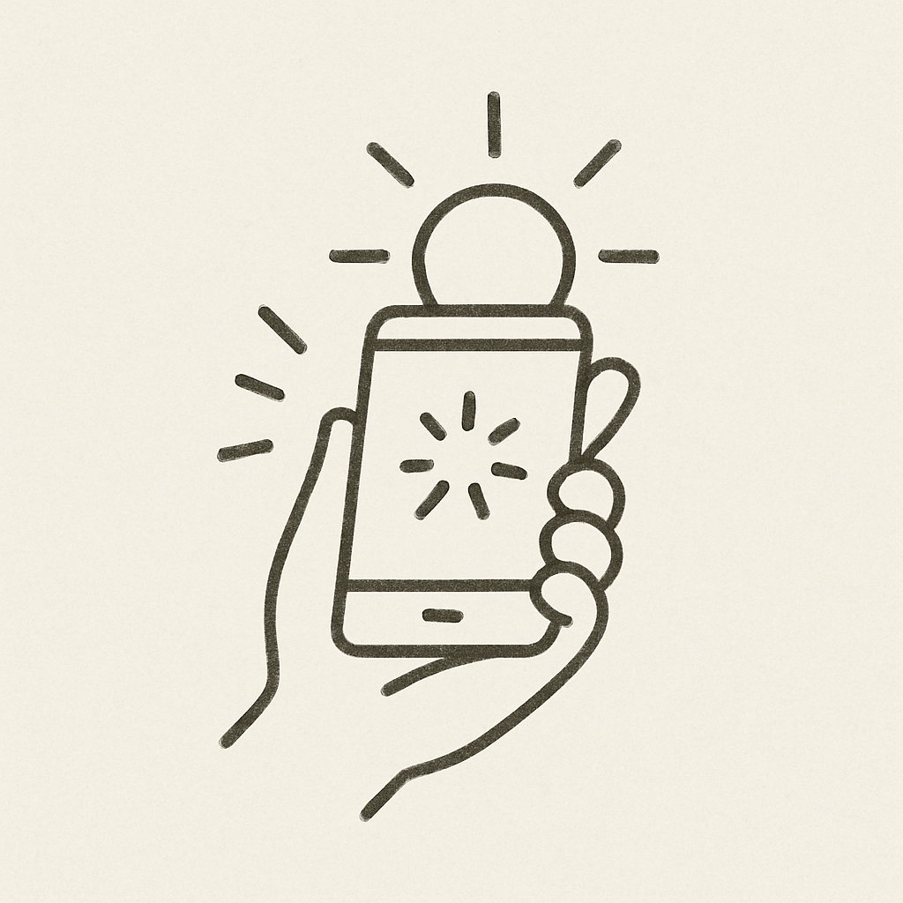
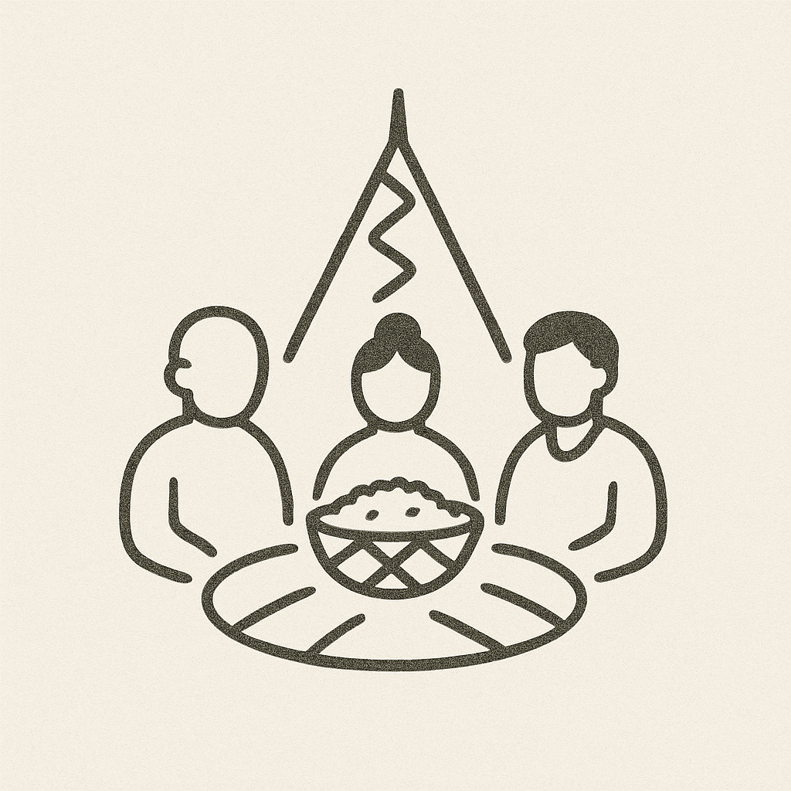
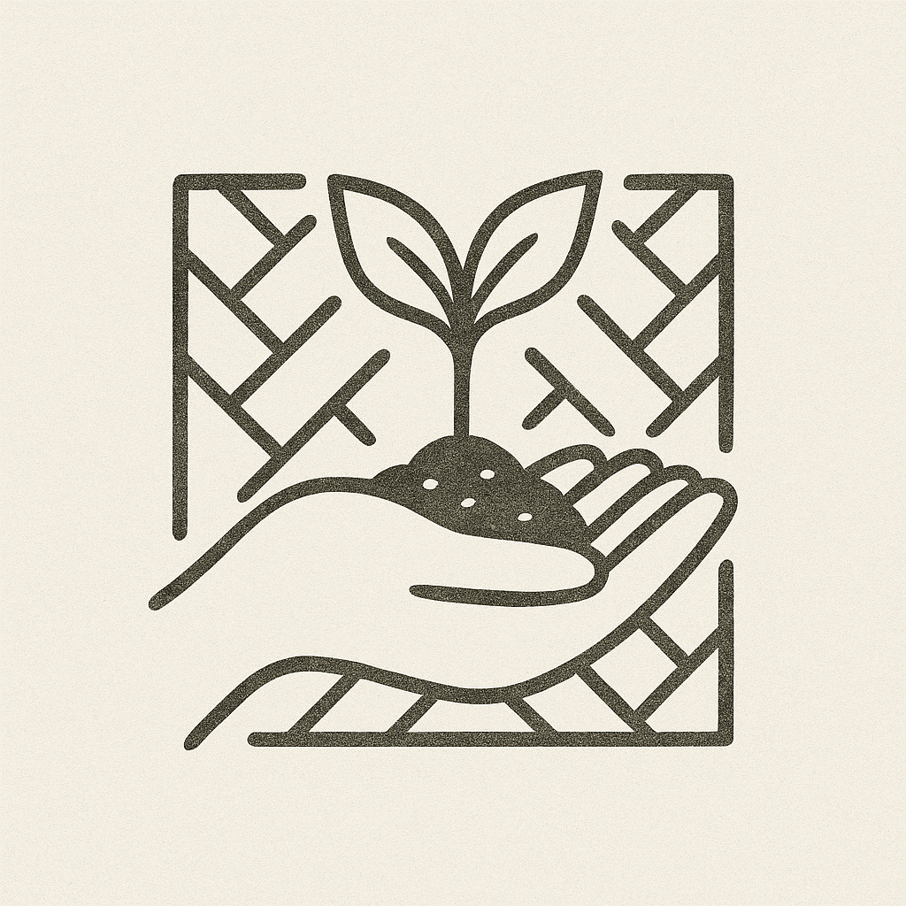
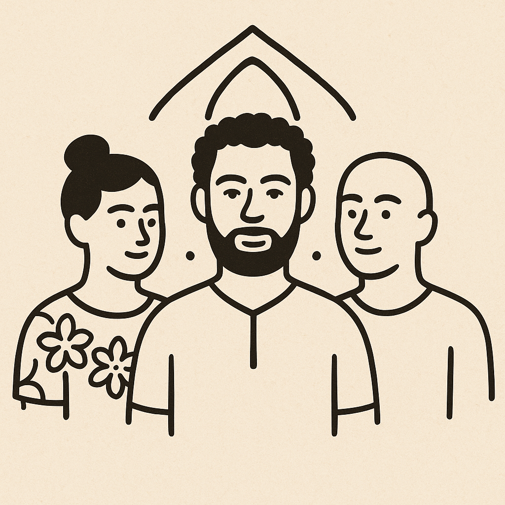
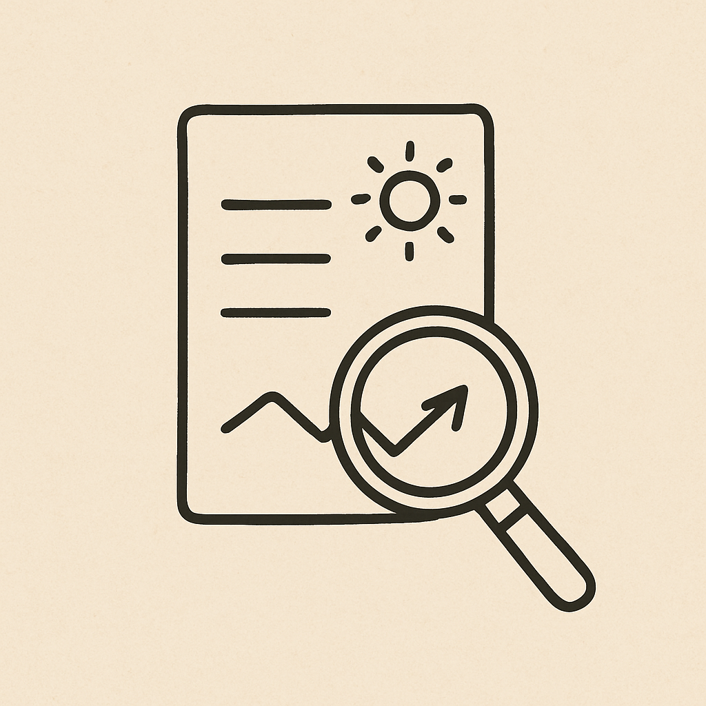

$KNY
profite à tous
profite à tous

Engagement

Création

Partage

Respect

Cohésion

Traçabilité
💡 L’échange crée la richesse
Chaque échange de $KNY peut inclure un geste numérique : respect, unité, partage. Ce geste agit comme un minage symbolique, créant de nouveaux tokens.
🌊 Redistribution communautaire
Les tokens minés sont versés dans un pool collectif. Ce pool est redistribué à tous les détenteurs, garantissant qu’aucun membre n’est oublié.
🌿 Le rôle des Porteurs de Voix
Les Porteurs de Voix amplifient la puissance de minage, sans gain personnel. Ils symbolisent la transmission et la voix du peuple.
💬 Pourquoi c’est unique ?
Parce que $KNY ne récompense pas l’individu, mais le lien social.